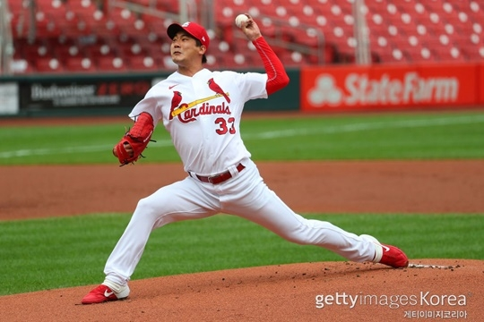

지난 등판에 이어 호투를 펼친 김광현(32·세인트루이스 카디널스)에 대한 현지 평가들이 전해졌다.

김광현은 8월 28일(이하 한국시간) 부시 스타디움에서 열린 피츠버그 파이어리츠와의 더블헤더 1차전에 선발 등판해 6이닝 3피안타 1볼넷 3탈삼진 1실점(비자책)으로 호투했다. 총 80개의 투구수를 기록했고 평균자책점은 1.69에서 1.08로 끌어내렸다.2경기 연속 퀄리티스타트를 달성한 김광현은 '선발 체질'임을 성적으로 증명하고 있다. 김광현은 올 시즌 3경기에 선발 등판해 15.2이닝 동안 단 2실점(1자책점)만을 내주는 '짠물투'를 펼쳤다. 선발 3경기에서의 평균자책점은 0.57에 불과하다.하지만 이날 시즌 2승 도전은 물거품이 됐다. 6회까지 김광현은 상대 타선을 꽁꽁 틀어막았지만, 1-1 상황에서 등판을 마치며 승리 신고를 다음으로 미뤘다. 김광현은 4회 2사 1, 2루와 6회 무사 1, 2루 위기에서 실점을 1점(비자책)으로 묶으며 위기관리 능력을 뽐냈다. 'MLB.com'의 앤 로저스 세인트루이스 담당 기자는 "김광현의 유일한 실점은 비자책이었고 4회초 브래드 밀러가 콜 터커의 땅볼 타구를 잡아 1루에 악송구를 범하며 이후 실점으로 기록됐다"면서 "김광현은 6이닝 동안 80구를 던지며 피안타 단 3개만을 내줬고 몇몇 위기들을 해결하여 피해를 막았다"라고 전했다 연이은 김광현의 호투 소식에 'MLB.com'의 제프 존스 세인트루이스 담당 기자는 "김광현이 내셔널리그 신인상을 받을 자격이 있다"라며 김광현을 치켜세웠다. 현재 김광현은 4경기(선발 3경기)에 등판해 1승 1세이브 16.2이닝 WHIP 0.90 평균자책점 1.08을 기록 중이다. 마무리로 시즌 출발을 했던 김광현이 어느새 팀 선발진의 한 축을 담당하며 상승세를 타고 있다. 김광현의 다음 등판은 내달 2일 혹은 3일 신시내티 레즈전이 유력하다.